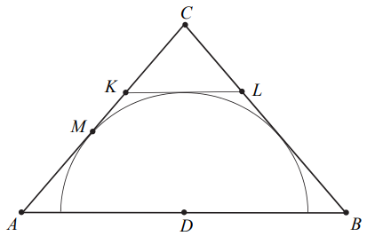

Matura 2020 czerwiec PR
Wielomian \(W\) określony wzorem \(W(x)=x^{2019}-3x^{2000}+2x+6\)
A.jest podzielny przez \((x-1)\) i z dzielenia przez \((x+1)\) daje resztę równą
\(6\).
B.jest podzielny przez \((x+1)\) i z dzielenia przez \((x-1)\) daje resztę równą
\(6\).
C.jest podzielny przez \((x-1)\) i jest podzielny przez \((x+1)\).
D.nie jest podzielny ani przez \((x-1)\), ani przez \((x+1)\).
Ciąg \((a_n)\) jest określony wzorem \(a_n=\frac{3n^2+7n-5}{11-5n+5n^2}\) dla
każdej liczby naturalnej \(n\ge1\). Granica tego ciągu jest równa
A.\( 3 \)
B.\( \frac{1}{5} \)
C.\( \frac{3}{5} \)
D.\( -\frac{5}{11} \)
Mamy dwie urny. W pierwszej są \(3\) kule białe i \(7\) kul czarnych, w drugiej
jest jedna kula biała i \(9\) kul czarnych. Rzucamy symetryczną sześcienną kostką do gry, która na
każdej ściance ma inną liczbę oczek, od jednego oczka do sześciu oczek. Jeśli w wyniku rzutu
otrzymamy ściankę z jednym oczkiem, to losujemy jedną kulę z pierwszej urny, w przeciwnym przypadku
– losujemy jedną kulę z drugiej urny. Wtedy prawdopodobieństwo wylosowania kuli białej jest równe
A.\( \frac{2}{15} \)
B.\( \frac{1}{5} \)
C.\( \frac{4}{5} \)
D.\( \frac{13}{15} \)
A
Po przekształceniu wyrażenia algebraicznego \((x\sqrt{2}+y\sqrt{3})^4\) do postaci
\(ax^4+bx^3y+cx^2y^2+dxy^3+ey^4\) współczynnik \(c\) jest równy
A.\( 6 \)
B.\( 36 \)
C.\( 8\sqrt{6} \)
D.\( 12\sqrt{6} \)
B
W trójkącie \(ABC\) bok \(AB\) jest \(3\) razy dłuższy od boku \(AC\), a długość
boku \(BC\) stanowi \(\frac{4}{5}\) długości boku \(AB\). Oblicz cosinus najmniejszego kąta trójkąta
\(ABC\). W kratki poniżej wpisz kolejno – od lewej do prawej – pierwszą, drugą oraz trzecią cyfrę po
przecinku nieskończonego rozwinięcia dziesiętnego otrzymanego wyniku.
\(\frac{344}{360}=0,955...\)
Wyznacz wszystkie wartości parametru \(a\), dla których równanie
\(|x-5|=(a-1)^2-4\) ma dwa różne rozwiązania dodatnie.
Dany jest trójkąt równoramienny \(ABC\), w którym \(|AC|=|BC|=6\), a punkt \(D\)
jest środkiem podstawy \(AB\). Okrąg o środku \(D\) jest styczny do prostej \(AC\) w punkcie \(M\).
Punkt \(K\) leży na boku \(AC\), punkt \(L\) leży na boku \(BC\), odcinek \(KL\) jest styczny do
rozważanego okręgu oraz \(|KC|=|LC|=2\) (zobacz rysunek).  Wykaż, że \(\frac{|AM|}{|MC|}=\frac{4}{5}\).
Liczby dodatnie \(a\) i \(b\) spełniają równość \(a^2+2a=4b^2+4b\). Wykaż, że
\(a=2b\).
Rozwiąż równanie \(3\cos 2x+10\cos^{2} x=24\sin x-3\) dla \(x\in \langle 0;2\pi
\rangle \).
W trzywyrazowym ciągu geometrycznym \((a_1, a_2, a_3)\), spełniona jest równość
\(a_1+a_2+a_3=\frac{21}{4}\). Wyrazy \(a_1, a_2, a_3\) są – odpowiednio – czwartym, drugim i
pierwszym wyrazem rosnącego ciągu arytmetycznego. Oblicz \(a_1\).
Dane jest równanie kwadratowe \(x^2-(3m+2)x+2m^2+7m-15=0\) z niewiadomą \(x\).
Wyznacz wszystkie wartości parametru \(m\), dla których różne rozwiązania \(x_1\) i \(x_2\) tego
równania istnieją i spełniają warunek \[2x_1^2+5x_1x_2+2x_2^2=2\]
Prosta o równaniu \(x+y-10=0\) przecina okrąg o równaniu \(x^2+y^2-8x-6y+8=0\) w
punktach \(K\) i \(L\). Punkt \(S\) jest środkiem cięciwy \(KL\). Wyznacz równanie obrazu tego
okręgu w jednokładności o środku \(S\) i skali \(k = −3\).
Oblicz, ile jest wszystkich siedmiocyfrowych liczb naturalnych, w których zapisie
dziesiętnym występują dokładnie trzy cyfry \(1\) i dokładnie dwie cyfry \(2\).
Podstawą ostrosłupa czworokątnego \(ABCDS\) jest trapez \(ABCD\) (\(AB||CD\)).
Ramiona tego trapezu mają długości \(AD=10\) i \(BC=16\), a miara kąta \(ABC\) jest równa \(30^\circ
\). Każda ściana boczna tego ostrosłupa tworzy z płaszczyzną podstawy kąt \(\alpha \), taki, że
\(\operatorname{tg} \alpha =\frac{9}{2}\). Oblicz objętość tego ostrosłupa.
Należy zaprojektować wymiary prostokątnego ekranu smartfona, tak aby odległości
tego ekranu od krótszych brzegów smartfona były równe \(0{,}5\) cm każda, a odległości tego ekranu
od dłuższych brzegów smartfona były równe \(0{,}3\) cm każda (zobacz rysunek – ekran zaznaczono
kolorem szarym). Sam ekran ma mieć powierzchnię \(60\ \text{cm}^2\). Wyznacz takie wymiary ekranu
smartfona, przy których powierzchnia ekranu wraz z obramowaniem jest najmniejsza.
\(6\) i \(10\)